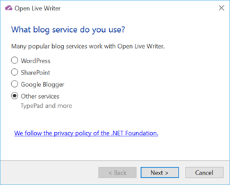

There are several paths to get to the blog setup.
First choose the blog type:
In this case Other Services
Click Next
Fill out the below box:
Web address is the webaddress of your blog. It is often http://username.typepad.com/ or can be your custom domain. It is usually the address of your blog's first page.
The userid is your login id for wordpress
The password is your password
If you check the remember your password checkbox, you will not have to enter your password again. Not a good idea on a shared computer.
Click next, and if you have entered in all the above correctly, Open Live Writer will set up your blog.
If you have multiple Typepad blogs, you will be able to select which one you want to set up
You will be asked if you want to download your theme, I suggest that you do.
You will also be asked for a blog nickname, with a suggestion, before finishing.
Click Finish and you are done.